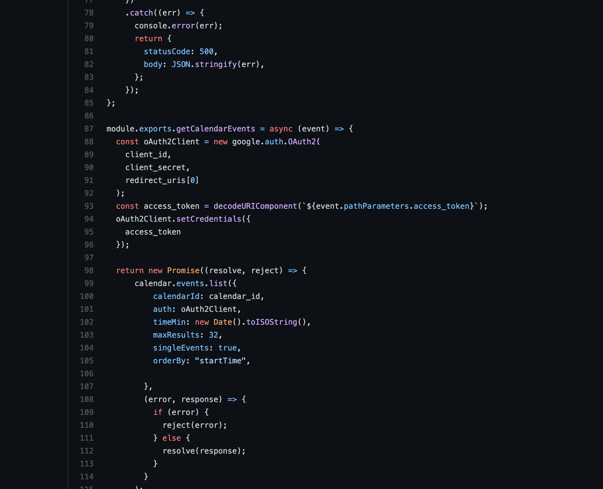

Meet is a progressive web app, developed using React, serverless functions, and the google calendar api, that provides users with the ability to view information about upcoming events. Users can filter events by city and/or number, and can also click on an event to see more details.
Meet was a personal project I built as part of the web development course at CareerFoundry, to demonstrate my knowledge of Javascript development.
The goal of the project was to obtain a full-stack project that I could add to my portfolio. The problem that I desired to solve was to build a progressive web application, initially following a TDD approach.
Concerning the server side of it, instead of using a traditional server, I made use of AWS lambda functions to create an authorization server. Using the authorization from this server, users would then be able to make requests to the Google Calendar API to get upcoming events.
After completing the backend work, I then began to build the client-side. It is a progressive web application, build with React. It provides one main view, where users can see a list of upcoming events and click on each event to see more detail, such as time, location, etc. The list of events can also be filtered by number, or by which city the user selects.
This proved to be one of my favorite projects of the course. At that point, not only was I more comfortable with using the terminal, I was also a bit more comfortable with React and development in general. However, I did face some challenges with the app verification, and ended up needing to resolve a cors error. Concerning the app verification, one challenge was that because the project made use of Google OAuth, it showed a warning screen because the app wasn’t completely verified. While originally the curriculum didn’t discuss it, it was finally updated to address the issue. After finally understanding the issue, and reading through their explanation on what was needed to fix it, I made the decision to leave it alone for the time being. My reasoning for this decision was that as the fix would change the original direction I had in mind for the project, and as the fix was considered optional for the course, it would be best to not pursue it at that time.
Concerning the cors error, that one proved to have a different cause then I first thought. After reading through countless articles and StackOverflow posts, and discussing it with students, my mentor, and tutor alike, I finally grasped the cause for the error. It ended up only being an issue with the endpoint to get the necessary token in my test file, (and perhaps an issue with the authentication code), but along the way to that solution I read a lot about Lambda Functions, errors with the AWS api gateway, HTML encoding, etc. I also gained an entirely new appreciation for StackOverflow.
The development of the application took a little bit longer than initially planned, due to issues with google app verification, cors, etc.
Role: Lead Developer
Tutor: Shan Gardezi
Mentor: Alexis Gormley